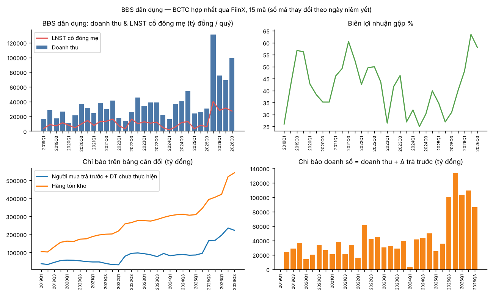

Báo cáo ngành · Bất động sản, thép, bán lẻ
Bất động sản, thép và bán lẻ 3Q26: động lực và xu hướng
Lợi nhuận BĐS dân dụng đạt kỷ lục nhưng doanh số đã qua đỉnh khi lãi suất vay mua nhà lên ~10,9%; thép là câu chuyện của HPG; bán lẻ hiện đại tiếp tục giành thị phần.
Điểm chính
- Lợi nhuận BĐS dân dụng đạt đỉnh ≈ cuối 2026 / 2027, đà bán hàng đã qua đỉnh — tin cậy trung bình. Bằng chứng: tiền đặt cọc giảm so với quý trước, chỉ báo doanh số giảm, giá trị hợp đồng chưa ghi nhận của VHM thu hẹp, tỷ lệ hấp thụ thị trường -66% QoQ, lãi suất vay mua nhà tăng gấp đôi.
- Thị trường BĐS dân dụng phân hóa hai tầng — tin cậy cao. Quy mô và vòng vốn của VHM/Sun (KSF) đối lập với nhóm vốn hóa vừa có dòng tiền kinh doanh âm và nợ vay tăng.
- Thép = câu chuyện của HPG đến hết 2027 — tin cậy cao về sản lượng HPG (tiêu thụ thép xây dựng +19% 9T, đầu tư công tăng); trung bình về biên lợi nhuận (chưa có dữ liệu giá thép xuất khẩu của Trung Quốc).
- Tăng trưởng bán lẻ duy trì đến Q4/26, rủi ro nền so sánh cao trong năm 2027 — tin cậy trung bình (VAT trở lại mức cũ, tồn kho tăng).
- BĐS khu công nghiệp: nhu cầu đi ngang đến tăng, lợi nhuận không đều, bảng cân đối căng dần — tin cậy trung bình.
1 · BĐS dân dụng — lợi nhuận kỷ lục, chỉ báo dẫn dắt đang đảo chiều

1.1 Kết quả kinh doanh: bùng nổ mang hình dáng VHM
| 9T | 2023 | 2024 | 2025 | 2026 |
|---|---|---|---|---|
| Doanh thu | 112,3 nghìn tỷ | 93,6 nghìn tỷ | 80,9 nghìn tỷ | 244,3 nghìn tỷ (+202%) |
| LNST cổ đông công ty mẹ | 35,5 nghìn tỷ | 19,1 nghìn tỷ | 16,9 nghìn tỷ | 86,6 nghìn tỷ (+413%) |
| Biên lợi nhuận gộp | 38,6% | 28,4% | 30,7% | 56,5% |
| Doanh thu trừ VHM | 17,7 nghìn tỷ | 23,7 nghìn tỷ | 29,8 nghìn tỷ | 41,7 nghìn tỷ (+40%) |
| LNST trừ VHM | 3,2 nghìn tỷ | -0,6 nghìn tỷ | 2,5 nghìn tỷ | 15,3 nghìn tỷ |
- QUAN SÁT: VHM chiếm 83% doanh thu và 82% LNST của nhóm trong 9T26. Doanh thu 9T của VHM 202,6 nghìn tỷ so với 51,1 nghìn tỷ; biên gộp 59% so với 23%.
- QUAN SÁT: Lợi nhuận ngoài VHM phục hồi trên diện rộng nhưng không đều: NVL có lãi trở lại (+2.989 tỷ so với -1.482 tỷ), KSF 4.695 tỷ (so với 1.426), SSH 1.966 tỷ (so với -286), SJS 1.432 tỷ (so với 174). 1.209 tỷ của KDH bao gồm 916 tỷ doanh thu tài chính.
- NHẬN ĐỊNH: 2026 là năm bàn giao cho lượng hàng bán ra trong làn sóng mở bán 2025 (gỡ vướng pháp lý → mở bán → thu tiền đặt cọc nửa cuối 2025 → ghi nhận doanh thu 2026). Lợi nhuận kỷ lục phản ánh nhu cầu năm 2025, không phải nhu cầu năm 2026.
1.2 Doanh số / tiền khách hàng trả trước: tăng so với cùng kỳ, giảm so với quý trước
| Quý | Q3/25 | Q4/25 | Q1/26 | Q2/26 | Q3/26 |
|---|---|---|---|---|---|
| Trả trước + DT chưa thực hiện (toàn nhóm) | 165,0 nghìn tỷ | 167,6 nghìn tỷ | 196,0 nghìn tỷ | 235,8 nghìn tỷ | 222,8 nghìn tỷ (-5,5% QoQ) |
| … trừ VHM | 56,5 nghìn tỷ | 72,9 nghìn tỷ | 80,0 nghìn tỷ | 86,9 nghìn tỷ | 94,8 nghìn tỷ (+9,1% QoQ) |
| Chỉ báo doanh số (toàn nhóm) | 100,3 nghìn tỷ | 133,8 nghìn tỷ | 103,7 nghìn tỷ | 109,3 nghìn tỷ | 86,4 nghìn tỷ |
| … trừ VHM | 35,1 nghìn tỷ | 45,4 nghìn tỷ | 17,4 nghìn tỷ | 24,3 nghìn tỷ | 22,0 nghìn tỷ |
- QUAN SÁT: Tiền khách hàng trả trước tăng so với cùng kỳ ở 11/15 doanh nghiệp (+35% toàn nhóm; trừ VHM +68%). Các doanh nghiệp tăng mạnh nhất: PDR (25 tỷ → 5,8 nghìn tỷ), DXG (3,0 → 9,1 nghìn tỷ), TAL (1,2 → 5,1 nghìn tỷ), KSF (19,1 → 32,3 nghìn tỷ), TCH (3,1 → 5,6 nghìn tỷ), KDH (0,4 → 1,9 nghìn tỷ).
- QUAN SÁT: Nhưng 6/15 doanh nghiệp giảm so với quý trước trong Q3/26 và tổng toàn nhóm giảm lần đầu tiên trong chu kỳ đi lên này, dẫn đầu bởi VHM (-14% QoQ). Bản thân VHM công bố doanh số Q3 đạt 71,5 nghìn tỷ so với 81,7 nghìn tỷ ở Q1, và giá trị hợp đồng chưa ghi nhận giảm từ 196,8 → 185,6 nghìn tỷ [web].
- QUAN SÁT [web]: Tỷ lệ hấp thụ thị trường giảm trong Q3/26 — DKRA: lượng tiêu thụ căn hộ khu vực phía Nam 3.471 căn, -66% QoQ (CafeF); Savills Hà Nội: nguồn cung mới -51% YoY, tỷ lệ hấp thụ toàn thị trường 39% (Tiền Phong).
- NHẬN ĐỊNH: Đà bán hàng đạt đỉnh khoảng Q4/25–Q2/26. Ở doanh nghiệp đầu ngành, tốc độ ghi nhận doanh thu nay đã vượt tốc độ bán mới; các doanh nghiệp vừa vẫn đang tích lũy tiền đặt cọc từ các đợt mở bán, nhưng chỉ báo doanh số theo quý trừ VHM (~22 nghìn tỷ) chỉ bằng một nửa mức Q4/25.
1.3 Nguồn cung và đòn bẩy: tồn kho và nợ vay tăng nhanh hơn tiền đặt cọc
| Cuối Q3 | 2024 | 2025 | 2026 |
|---|---|---|---|
| Hàng tồn kho | 312,0 nghìn tỷ | 393,8 nghìn tỷ | 542,6 nghìn tỷ (+38%) |
| Vay nợ | 175,6 nghìn tỷ | 275,9 nghìn tỷ | 415,8 nghìn tỷ (+51%) |
| Nợ ròng / VCSH (đã trừ tiền + tiền gửi có kỳ hạn) | 0,35 | 0,47 | 0,52 |
| Dòng tiền kinh doanh 9T trừ VHM | -16,4 nghìn tỷ | -8,1 nghìn tỷ | -15,9 nghìn tỷ |
- QUAN SÁT: Nợ vay tăng tập trung ở các doanh nghiệp tích lũy quỹ đất: KSF 1,6 nghìn tỷ (Q3/24) → 36,1 nghìn tỷ; PDR 4,4 → 13,6 nghìn tỷ; KDH 7,8 → 17,8 nghìn tỷ (tồn kho 22,5 → 29,9 nghìn tỷ); TAL 3,8 → 7,7 nghìn tỷ; CEO 0,5 → 2,9 nghìn tỷ; NVL 59,8 → 72,4 nghìn tỷ. Giảm đòn bẩy: DIG (3,7 → 1,3 nghìn tỷ), NLG (6,6 → 5,1 nghìn tỷ).
- QUAN SÁT: Dòng tiền kinh doanh của nhóm trừ VHM âm trong mọi giai đoạn 9T từ 2021–2026.
- QUAN SÁT [web]: Chi phí vốn đi ngược chiều: lãi suất vay mua nhà cố định bình quân 10,9% (tháng 8/2026) so với mức ưu đãi ~5,5–6% năm 2025 (The Investor); mục tiêu tăng trưởng tín dụng 2026 ~15%, tín dụng BĐS của ngân hàng không được tăng nhanh hơn tổng tín dụng (Viet Nam News); bảng giá đất mới từ 1/1/2026 làm tăng chi phí đất [web].
- NHẬN ĐỊNH: Ngành đã tăng đòn bẩy trở lại đúng lúc lãi suất đi lên. Các doanh nghiệp mua đất/mở bán trong 2025–26 bằng vốn vay ngân hàng (KSF, PDR, TAL, CEO, KDH) chịu rủi ro lãi suất và thanh khoản lớn nhất nếu bán hàng tiếp tục yếu trong Q4/26–nửa đầu 2027.
1.4 Bảng cân đối của VHM — yếu tố biến động lớn nhất
| VHM, cuối Q3 | 2024 | 2025 | 2026 |
|---|---|---|---|
| Tổng tài sản | 524,7 nghìn tỷ | 768,3 nghìn tỷ | 1.339,2 nghìn tỷ |
| Vay nợ | 72,2 nghìn tỷ | 141,5 nghìn tỷ | 240,6 nghìn tỷ |
| Phải trả ngắn hạn khác | — | 107,2 nghìn tỷ | 401,7 nghìn tỷ |
| Trả trước cho người bán | — | 54,9 nghìn tỷ | 198,3 nghìn tỷ |
| Người mua trả tiền trước + DT chưa thực hiện | 50,4 nghìn tỷ | 108,5 nghìn tỷ | 128,0 nghìn tỷ |
- QUAN SÁT: Tài sản tăng 2,6 lần trong hai năm; phải trả ngắn hạn khác tăng 294 nghìn tỷ và trả trước cho người bán tăng 143 nghìn tỷ chỉ trong 12 tháng.
- NHẬN ĐỊNH (chưa kiểm chứng — cần thuyết minh BCTC Q3/26): khoản phải trả khác nhiều khả năng gồm tiền đặt cọc của người mua theo hợp đồng đặt cọc và/hoặc vốn góp của đối tác vào các đại dự án; trả trước cho người bán có thể gồm chi phí giải phóng mặt bằng và nhà thầu (có thể là bên liên quan). Nếu là tiền đặt cọc, doanh số thực tế lớn hơn chỉ báo; nếu là vốn từ đối tác/bên liên quan, vòng tiền của hệ sinh thái Vin là điểm phụ thuộc mang tính hệ thống của cả ngành. Việc cần làm: đọc thuyết minh "phải trả khác" và "trả trước cho người bán" trong BCTC Q3/26 của VHM.
1.5 Thị trường đang định giá điều gì
- QUAN SÁT (ảnh chụp FiinX ~09/11/2026): Biến động giá từ đầu năm — KDH -47%, CEO -39%, PDR -38%, BCM -38%, DIG -34%, DXG -27%, NLG -25%, NVL -15%, VHM +1%, VIC +38%. P/B: NVL 0,58, NLG 0,86, DIG 0,87, PDR 0,92, DXG 0,97, KDH 0,99, VHM 1,73.
- NHẬN ĐỊNH: Thị trường đã chiết khấu bước ngoặt tín dụng/thanh khoản ở nhóm vốn hóa vừa dù lợi nhuận toàn ngành ở mức kỷ lục. Mức hỗ trợ từ giá trị sổ sách (P/B < 1) chỉ đáng tin khi hàng tồn kho bán được với lãi suất vay mua nhà trên 10%.
2 · BĐS khu công nghiệp — giai đoạn đầu tư, ghi nhận doanh thu không đều

- QUAN SÁT: Doanh thu 9T26 đạt 20,9 nghìn tỷ (-13%), LNST 4,5 nghìn tỷ (-30%), nhưng doanh thu Q3/26 +19% YoY (8,7 nghìn tỷ). Tồn kho 50,7 → 69,1 nghìn tỷ (+36%), nợ vay 60,2 → 73,4 nghìn tỷ, nợ ròng/VCSH 0,61 (0,55). Dòng tiền kinh doanh 9T âm hai năm liên tiếp (-10,7 nghìn tỷ, -7,7 nghìn tỷ). Tồn kho KBC 25,1 → 35,4 nghìn tỷ; IDC 1,3 → 8,2 nghìn tỷ (khu công nghiệp mới).
- QUAN SÁT [web]: Diện tích đất KCN hạng 1 phía Nam được hấp thụ 9T26 163 ha, +56% YoY, giá thuê +1,5% YoY; nhà xưởng xây sẵn -48% (TBTCVN/CBRE). FDI đăng ký 10T26 đạt 54,85 tỷ USD (TBTCVN). Mỹ áp thêm thuế Mục 301 +12,5% lên phần lớn hàng hóa Việt Nam từ 24/7/2026 (VnEconomy).
- NHẬN ĐỊNH: Nhu cầu vẫn vững (cho thuê đất tăng); lợi nhuận đi xuống là do thời điểm ghi nhận và việc tích lũy quỹ đất bằng vốn vay. Động lực cần theo dõi: sự ổn định của chính sách thuế quan → giải ngân FDI → chuyển đổi từ biên bản ghi nhớ sang hợp đồng thuê.
3 · Thép — công suất HPG + bảo hộ nhập khẩu; phần còn lại đi ngang

| 9T | 2024 | 2025 | 2026 |
|---|---|---|---|
| Doanh thu | 198,7 nghìn tỷ | 201,1 nghìn tỷ | 275,6 nghìn tỷ (+37%) |
| LNST cổ đông công ty mẹ | 9,4 nghìn tỷ | 12,3 nghìn tỷ | 26,1 nghìn tỷ (+112%) |
| Biên lợi nhuận gộp | 10,1% | 12,0% | 14,0% |
| Tăng trưởng doanh thu YoY theo quý (mẫu tương đồng) | Q1 +27%, Q2 +31%, Q3 +55% | ||
| Doanh thu / LNST trừ HPG (trừ POM) | 92,7 / 1,0 nghìn tỷ | 89,5 / 1,2 nghìn tỷ | 103,3 / 2,9 nghìn tỷ |
- QUAN SÁT: HPG chiếm 62% doanh thu, 90% LNST. Doanh thu 9T26 của HPG +55% (170,3 nghìn tỷ), lợi nhuận gộp 30,8 nghìn tỷ so với 18,1 nghìn tỷ, số ngày tồn kho 92 so với 136. LNST của HPG bao gồm 5,9 nghìn tỷ doanh thu tài chính trong Q1/26 (thông thường chỉ ~0,4–0,7 nghìn tỷ/quý) — khoản bất thường cần loại trừ; chưa xác định được nguồn.
- QUAN SÁT [web]: Dung Quất 2 tăng tốc: thép thô 9T26 đạt 10,7 triệu tấn (+35%), bán HRC 5,47 triệu tấn (+59%) (TBTCVN); Việt Nam áp thuế chống bán phá giá chính thức với HRC Trung Quốc 23,10–27,83% từ 6/7/2025 (The Leader).
- QUAN SÁT: Nhóm tôn mạ giậm chân tại chỗ: doanh thu HSG +12%, LNST đi ngang (561 so với 570 tỷ); LNST NKG 253 tỷ, số ngày tồn kho tăng lên 149 (128). LNST TVN tăng vọt (1.742 so với 503 tỷ) chủ yếu nhờ doanh thu tài chính (1.374 tỷ). Nợ ròng/VCSH toàn ngành giảm 0,60 → 0,45 (Q3/25 → Q3/26).
- NHẬN ĐỊNH: Xu hướng ngành thép năm 2026 đến từ một động lực — thay thế nhập khẩu (thuế chống bán phá giá + HRC Dung Quất 2 thay hàng Trung Quốc) — và động cơ nhu cầu là xây dựng trong nước gắn với bàn giao BĐS và đầu tư công. Tôn mạ phụ thuộc xuất khẩu chịu các biện pháp phòng vệ thương mại nên không hưởng lợi. Rủi ro bậc hai: doanh số BĐS dân dụng đảo chiều (mục 1.2) sẽ tác động đến nhu cầu thép xây dựng với độ trễ 2–4 quý.
4 · Bán lẻ — kênh hiện đại giành thị phần; PNJ là ngoại lệ

| 9T (trừ DMX) | 2024 | 2025 | 2026 |
|---|---|---|---|
| Doanh thu | 188,3 nghìn tỷ | 208,0 nghìn tỷ | 275,9 nghìn tỷ (+33%) |
| LNST cổ đông công ty mẹ | 4,9 nghìn tỷ | 7,7 nghìn tỷ | 11,6 nghìn tỷ (+52%) |
| Biên lợi nhuận gộp | 17,7% | 17,8% | 17,7% |
| Hàng tồn kho (cuối Q3) | 46,5 nghìn tỷ | 52,4 nghìn tỷ | 77,2 nghìn tỷ (+47%) |
| Dòng tiền kinh doanh 9T | 10,7 nghìn tỷ | 8,3 nghìn tỷ | -1,8 nghìn tỷ |
- QUAN SÁT: Doanh thu MWG +30% (147,8 nghìn tỷ), LNST cổ đông công ty mẹ 9,1 nghìn tỷ (+84%), vốn chủ sở hữu 31,8 → 52,4 nghìn tỷ sau IPO của DMX (DMX niêm yết ngày 6/8/2026 với giá 80.000 đồng [web, TTTCTT]). FRT +33% (LNST 1.069 so với 505 tỷ), DGW +44% (786 so với 388 tỷ), PET +43%.
- QUAN SÁT: Doanh thu PNJ +29% nhưng biên gộp chỉ 10% (21%), LNST 472 tỷ (1.610 tỷ). [web, VnEconomy] Lỗ Q3/26 258 tỷ; ĐHĐCĐ bất thường ngày 21/10 hạ kế hoạch 2026 xuống lỗ 6,3 nghìn tỷ do trích lập ~7,1 nghìn tỷ dự phòng nghĩa vụ mua lại sản phẩm; thông qua phương án phát hành riêng lẻ ~8 nghìn tỷ (mức trần).
- QUAN SÁT [web]: Tổng mức bán lẻ cả nước 10T26 +13,5% danh nghĩa (Tạp chí KT-TC); chính sách giảm 2 điểm % thuế VAT hết hạn 31/12/2026, chưa thấy gia hạn (PwC).
- NHẬN ĐỊNH: Các chuỗi niêm yết tăng trưởng gấp ~2,5 lần thị trường (+33% so với +13,5%) = giành thị phần nhờ chính thức hóa và hợp nhất thị trường (bỏ thuế khoán hộ kinh doanh từ 1/1/2026 [web, một nguồn]). Cần theo dõi: tồn kho tăng nhanh hơn doanh thu (+47% so với +33%; số ngày tồn kho MWG 84 so với 74, FRT 111 so với 100) và dòng tiền kinh doanh âm trước khi VAT trở lại mức cũ — có thể là nhu cầu bị kéo sớm vào năm 2026.
5 · Bối cảnh vĩ mô (FiinX)
| Chỉ tiêu | Mới nhất | So sánh | Đánh giá |
|---|---|---|---|
| Lãi suất cho vay bình quân (NHNN công bố) | 9,65% (T9/26) | 7,75% (T10/25): +190 điểm cơ bản trong 11 tháng, tăng mỗi tháng | Giá tín dụng thắt chặt — lực cản chính của BĐS |
| Lãi suất cho vay trung dài hạn VND, cận trên | 10,9% (T9/26) | 10,5% (T6/26) | Khớp với mức lãi vay mua nhà 10,9% của DKRA |
| Lãi suất huy động bình quân | 7,0% (T9/26) | 6,6% (T6/26) | Ngân hàng phải trả giá cao hơn để huy động → thêm áp lực lên lãi suất cho vay |
| Tăng trưởng cho vay BĐS của các ngân hàng niêm yết | +33% YoY (Q3/26) | +15% (Q4/25) | Dòng vốn vẫn chảy vào BĐS — "trần" tín dụng chưa phát huy tác dụng |
| Dư nợ trái phiếu doanh nghiệp BĐS | 479 nghìn tỷ (T11/26) | 395 nghìn tỷ (cuối 2025), +21%; phát hành từ đầu 2026 đạt 187 nghìn tỷ > 154 nghìn tỷ cả năm 2025 | Kênh trái phiếu đang mở; đáo hạn 2027: Q2 63 nghìn tỷ, Q3 23 nghìn tỷ, Q4 37 nghìn tỷ |
| Tiêu thụ thép xây dựng 9T | 11,6 triệu tấn (+19% YoY) | 9,7 triệu tấn 9T25; T7–T9/26 +26%/+36%/+26% YoY | Nhu cầu xây dựng vẫn tăng tốc |
| GDP thực Q3/26 | 9,9% | Xây dựng +14,2%, hoạt động KD BĐS +5,6%, thương mại +10,4% | Nền vĩ mô mạnh |
| Chi đầu tư phát triển từ NSNN | 1.120 nghìn tỷ (2026, nhiều khả năng là kế hoạch) | 791 nghìn tỷ (2025) | Đẩy mạnh đầu tư công hỗ trợ thép/xây dựng |
| FDI giải ngân 10T | 24,1 tỷ USD (+13%) | 21,3 tỷ USD 10T25 | Hỗ trợ BĐS khu công nghiệp |
| Tổng mức bán lẻ YoY | 14,7% (T10/26) | 7,2% (T10/25); CPI 5,09% → tăng thực ~9,6% | Tiêu dùng bùng nổ, một phần nhờ giảm VAT |
Lưu ý dữ liệu (từ FiinX): tăng trưởng tín dụng toàn hệ thống so với đầu năm hiển thị 16,69% cho T9/26 so với 10,19% T8/26 — nhiều khả năng là lỗi dữ liệu, không sử dụng. Số chi đầu tư phát triển 2026 nhiều khả năng là số kế hoạch. Giá trị dư nợ BĐS tuyệt đối của ngân hàng có vẻ sai đơn vị; chỉ dùng tốc độ tăng trưởng.
Bối cảnh vĩ mô thay đổi điều gì (NHẬN ĐỊNH):
- Động lực #1 là câu chuyện về giá vốn, không phải về lượng vốn: tiền vẫn chảy đến chủ đầu tư (cho vay BĐS +33%, trái phiếu +21%), nhưng với chi phí cao hơn ~190 điểm cơ bản. Điều này giải thích cả việc đòn bẩy của chủ đầu tư tăng (mục 1.3) lẫn tỷ lệ hấp thụ của người mua cuối giảm (mục 1.2) — chủ đầu tư vẫn huy động được vốn, còn người mua chùn tay trước lãi vay hai chữ số.
- Phép thử tái cấp vốn dời sang năm 2027 (123 nghìn tỷ trái phiếu BĐS đáo hạn Q2–Q4/27) — giai đoạn dòng tiền từ bàn giao 2026 cạn dần nếu doanh số tiếp tục yếu.
- Rủi ro "độ trễ 2–4 quý" đối với ngành thép chưa xuất hiện: tiêu thụ thép xây dựng +19% 9T, Q3 tăng tốc, GDP ngành xây dựng +14%. Đầu tư công đang gánh nhu cầu; tác động từ BĐS dân dụng chậm lại sẽ thể hiện trước tiên ở sản lượng năm 2027.
6 · Tổng hợp — động lực và xu hướng
Bản đồ động lực (NHẬN ĐỊNH, dựa trên mục 1–4):
| # | Động lực | Cơ chế | Chiều hướng hiện tại | Ngành chịu tác động |
|---|---|---|---|---|
| 1 | Giá tín dụng (lượng vẫn dồi dào) | Lãi suất cho vay +190 điểm cơ bản trong 11 tháng, vay mua nhà ~10,9% → người mua hấp thụ ↓ → tiền đặt cọc ↓; chủ đầu tư vẫn có vốn (cho vay BĐS +33%) → đòn bẩy ↑ | Tiêu cực, đang thắt chặt | BĐS dân dụng (hiện tại), thép (trễ 2–4 quý), ngân hàng (rủi ro tín dụng) |
| 2 | Gỡ vướng pháp lý (các luật 2024–25) | Dự án mở bán lại → làn sóng đặt cọc 2025 → lợi nhuận bàn giao 2026 | Tích cực nhưng đã phản ánh vào lợi nhuận | BĐS dân dụng |
| 3 | Mức độ tập trung | Hệ sinh thái Vin = ~82% lợi nhuận BĐS dân dụng; vòng tiền trên bảng cân đối qua phải trả khác/trả trước | Đang tăng | BĐS dân dụng, tỷ trọng chỉ số |
| 4 | Chính sách thương mại | Thuế chống bán phá giá bảo vệ HPG; Mục 301 / thuế chống bán phá giá-chống trợ cấp ảnh hưởng doanh nghiệp xuất khẩu và tiến độ FDI | Đan xen | Thép (+HPG / –tôn mạ), BĐS khu công nghiệp |
| 5 | Chính thức hóa tiêu dùng | Chính sách thuế + quy mô chuỗi → các chuỗi niêm yết giành thị phần | Tích cực; giảm VAT kết thúc cuối 2026 | Bán lẻ |
Lập luận phản biện
- Tiền đặt cọc Q3 giảm có thể do yếu tố kế toán, không phải nhu cầu. VHM ghi nhận 85 nghìn tỷ doanh thu trong Q3, làm giảm khoản trả trước. Tiền đặt cọc của nhóm trừ VHM vẫn tăng 9% so với quý trước. Mức hấp thụ -66% của DKRA trùng với nguồn cung -31% QoQ — có thể nút thắt là số dự án mở bán chứ không phải người mua. Q4 theo mùa vụ là quý mở bán lớn nhất. Nếu doanh số Q4/26 của VHM ≥ 80 nghìn tỷ (mức cần để đạt mục tiêu trên 300 nghìn tỷ [web, kế hoạch]), nhận định #1 sai về thời điểm.
- Đòn bẩy có thể là lành mạnh. Nợ vay và tồn kho tăng chính là hình ảnh của một chu kỳ phục hồi sau 2022–23; P/B < 1 ở nhóm vốn hóa vừa đã phản ánh rủi ro, nên cổ phiếu có thể đã tạo đáy trước cơ bản doanh nghiệp.
- Giới hạn của chỉ báo. Chỉ báo doanh số bỏ sót tiền đặt cọc nằm trong phải trả khác (VHM), lẫn các khoản ngoài BĐS, và không thấy được các dự án liên doanh/liên kết (ví dụ các dự án NLG đã thôi hợp nhất một phần — tồn kho của NLG giảm một nửa 17,9 → 9,2 nghìn tỷ, nhiều khả năng do thay đổi cấu trúc chứ không phải do bán hàng). Kết luận: lập luận phản biện làm yếu đi phần thời điểm của nhận định #1, không làm thay đổi chiều hướng — chi phí vay mua nhà năm 2026 là lực cản từ nguyên lý gốc mà không yếu tố kế toán nào bù đắp được. Giữ nguyên, mức tin cậy "trung bình".
Các điều chỉnh trong quá trình phân tích
- Phát hiện lỗi dữ liệu: lần lấy dữ liệu đầu tiên bị thiếu tiền mặt. Nợ ròng bị phóng đại; đã lấy lại dữ liệu tiền mặt và kiểm tra lại (tiền mặt KDH Q3/26 6.199 tỷ khớp với truy vấn trực tiếp).
- Bổ sung góc nhìn trừ VHM / trừ HPG / trừ MWG — số liệu tổng ngành bị chi phối bởi mức độ tập trung.
- Hạ chỉ báo doanh số từ "thước đo" xuống "mức sàn" sau khi phát hiện 402 nghìn tỷ phải trả khác của VHM.
- Đánh dấu các khoản thu nhập ngoài hoạt động kinh doanh chính (HPG Q1, TVN, KDH) thay vì coi đó là xu hướng.
- Rà soát số liệu phát hiện 4 lỗi trong bản nháp đầu (xu hướng tồn kho/tiền đặt cọc, mốc nợ ròng/VCSH ngành thép, nhãn "thấp nhất kể từ" của chỉ báo, dòng tiền trả trước của VHM) — tất cả đã được sửa; việc sửa tỷ lệ tồn kho/tiền đặt cọc đã loại bỏ nhận định rằng nguồn cung đang vượt doanh số.
7 · Bộ theo dõi — các chỉ báo dẫn dắt cập nhật mỗi quý
| Chỉ báo | Nguồn | Q3/26 | Tín hiệu |
|---|---|---|---|
| Tiền đặt cọc BĐS dân dụng QoQ (toàn nhóm / trừ VHM) | bộ theo dõi ngành | -5,5% / +9,1% | Quý giảm đầu tiên |
| Chỉ báo doanh số (toàn nhóm) | như trên | 86,4 nghìn tỷ | Thấp nhất trong năm quý |
| Tồn kho ÷ tiền đặt cọc (BĐS dân dụng) | tính toán | 2,4 lần | Đi ngang so với cùng kỳ (2,4 lần); giảm từ 3,5 lần tại Q3/24 |
| Nợ ròng/VCSH BĐS dân dụng | tính toán | 0,52 | ↑ |
| Phải trả khác + trả trước người bán của VHM | BCĐKT FiinX | 401,7 / 198,3 nghìn tỷ | Cần làm rõ trước kỳ cập nhật sau |
| Biên gộp ngành thép / số ngày tồn kho HPG | bộ theo dõi | 14,0% / 92 ngày | Lành mạnh |
| Tăng trưởng tồn kho − tăng trưởng doanh thu (bán lẻ) | bộ theo dõi | +15 điểm % | Thận trọng |
| Lãi suất vay mua nhà (DKRA/NHNN) | web | 10,9% (T8) | Lực cản |
8 · Câu hỏi còn bỏ ngỏ
- Thuyết minh BCTC Q3/26 của VHM: cơ cấu phải trả khác (402 nghìn tỷ) và trả trước cho người bán (198 nghìn tỷ); tỷ trọng bên liên quan.
- Doanh thu tài chính 5,9 nghìn tỷ của HPG trong Q1/26 — đó là khoản gì?
- Doanh số Q4/26 (mục tiêu của VHM cần ~80–130 nghìn tỷ trong Q4) — phép thử quyết định cho nhận định #1.
- Bằng chứng từ web ở mức trích dẫn kết quả tìm kiếm (không truy cập được trang gốc): cần đối chiếu các dòng một nguồn với tài liệu công bố.
- Bức tường tái cấp vốn 2027: riêng Q2/27 có 63 nghìn tỷ trái phiếu BĐS đáo hạn (FiinX) — xác định tổ chức phát hành (NVL, KSF, VHM?) ở kỳ cập nhật sau.
Phương pháp và nguồn
Nội dung: thống kê theo quý các doanh nghiệp phát triển bất động sản niêm yết lớn nhất (kèm ngành thép và bán lẻ), dựng từ báo cáo tài chính hợp nhất qua FiinX, nhằm tìm ra động lực và xu hướng của ngành. Đơn vị: tỷ đồng nếu không ghi chú khác; "nghìn tỷ" = 1.000 tỷ đồng. 9T = tổng Q1–Q3, để năm 2026 so sánh được tương đương với các năm trước. Khoản mục bảng cân đối kế toán tính tại cuối Q3. Quy ước đọc: QUAN SÁT = kiểm chứng được từ dữ liệu, NHẬN ĐỊNH = đánh giá của tác giả. Dữ kiện thị trường/chính sách có đường dẫn nguồn báo chí, ở mức trích từ kết quả tìm kiếm, chưa đối chiếu với tài liệu gốc — đánh dấu [web].
| Nhóm | Mã (vốn hóa lớn nhất theo ICB, ảnh chụp FiinX ~09/11/2026) | Loại trừ |
|---|---|---|
| BĐS dân dụng (15) | VHM, KSF, NVL, SSH, VPI, KDH, SJS, CRV, DXG, TCH, TAL, PDR, NLG, DIG, CEO | VIC (hợp nhất VHM → tính trùng), VRE (cho thuê TTTM), VEF (hội chợ triển lãm) |
| BĐS khu công nghiệp (5) | BCM, KBC, IDC, SIP, SZC | — |
| Thép (8) | HPG, HSG, NKG, TVN, SMC, VGS, POM, TIS | POM chưa công bố BCTC Q3/26 → số 9T26 thấp hơn thực tế một chút |
| Bán lẻ (6) | MWG, FRT, DGW, PNJ, PET (+DMX được theo dõi nhưng không cộng vào tổng — là công ty con của MWG) | MSN/WinCommerce (tập đoàn đa ngành) |
Bài toán doanh số bán hàng (tư duy từ nguyên lý gốc). Doanh nghiệp BĐS Việt Nam không công bố doanh số bán hàng (presales) trong báo cáo tài chính. Doanh thu chỉ được ghi nhận khi bàn giao (trễ 1–3 năm so với thời điểm bán). Thứ bảng cân đối có thể hiện là tiền thu trước bàn giao: người mua trả tiền trước + doanh thu chưa thực hiện. Do đó:
chỉ báo doanh số (quý) = doanh thu ghi nhận + Δ(người mua trả tiền trước + doanh thu chưa thực hiện)
Kiểm chứng: chỉ báo của VHM 9T26 = 235,8 nghìn tỷ so với doanh số VHM tự công bố 219,6 nghìn tỷ [web] → chênh lệch dưới 7%. Sai lệch đã biết: đây là mức sàn với các chủ đầu tư hạch toán tiền đặt cọc trước hợp đồng mua bán vào "phải trả khác" — VHM rõ ràng làm vậy (xem mục 1.4). Chỉ báo cũng lẫn doanh thu ngoài bất động sản (xây dựng, cho thuê).